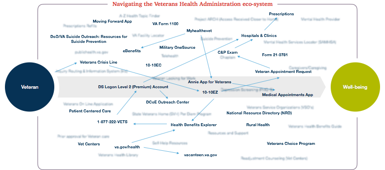

Crafting the story

Creating an ideal Mobile Portal Experience for our U.S. Veterans
ROLE : UX LEAD
Building on preexisting VA research
There is amazing research available on the problems the VA is facing. They provide great services, but it's difficult to navigate. We interviewed veterans themselves, explored every digital product the VA offered, and sifted through the top white papers that highlighted major issues veterans face today. We knew our prototype wasn't going to solve every problem, so we narrowed down the biggest roadblocks veterans face from receiving their medical benefits and staying healthy in the meantime. Our client was the VA, but the veterans would be the epicenter. We centered around the following to be our north star for the prototype content:
Untangling the VA health benefits application
It's a nightmare for veterans to find what they need to apply for benefits. They have to retell their story multiple times before being pointed to yet another form or process. We spoke with veterans and simulated what it would be like for Victor if he tried to navigate on his own, only knowing about va.gov.
What we found was staggering.
We needed a powerful veteran story to become the foundation of the design and showcase the problems the VA was facing with their users.
Setting
Adjusting to civilian life after service can be a stressful and emotionally demanding time for veterans. Many would benefit from mental health services provided by the VA, but are too proud to ask for help or don’t know where to look. Health care providers need to meet patients where they are and reimagine the experience before, during, and between visits with clinicians.
Problem
Men and women who serve our country in the U.S. Armed Forces exit from military duty only to face new challenges reacclimatizing to civilian life.
The numerous services available to veterans are confusing and many of the application processes are difficult to navigate. This lack of transparency causes additional frustration for veterans at an already stressful time in their lives, compounded by the amount of time it all takes to get help.
Hypothesis
If mental health services were better tailored to the needs and tendencies of veterans,
then patients would be more engaged and open to participate in their treatment journey,
and care providers could address concerns before they become problems.
Design Principles
Simple, Responsive and Transparent Feedback
Personalized to My Needs
Predictive to My Situation
Brings My Circle with Me
Keeps Me Engaged
Mental Health Conscious
Moodboard
Meet Victor
Victor Ryer has recently separated from active military service and has started developing post-war issues. He thought he could manage it on his own and hoped it would get better with time. However, the added stress of a new baby has only increased his anxiety and depression. Victor begins to see his issues affecting his ability to be a good father and husband. Unsure what to do and too proud to ask for help, Victor suffers in silence as his symptoms worsen.
Introducing
AI companionship
Designing for the future of an integrated world, we created Everything-Everywhere-Veteran Affairs, or EEVA. She would be the AI companion veterans could rely on at any time. EEVA would be an expert on the VA, and she'd get to know you on a personal level to best understand your needs. She'll even alert your close ones if she notices a behavior change.
Tell EEVA just enough, and she does the rest. Our goal was to make onboarding quick, smart, and secure. EEVA is fully connected to VA databases and will have the information you've already given through service.
Cards are an excellent way to present information to a user, and the simplicity worked well as a way for EEVA to offer a user with new information. She would predict what you need based off your activity.
Staying healthy
Mental health is one of the top issues for veterans adjusting to civilian life. One of the key features we created was a journaling mechanism called the Pack. There were up to six available input methods, and EEVA will log each entry into a calendar view. If you forget or become disengaged, EEVA will remind you.
Not only will this keep veterans' minds occupied with positive activities, but it tracks progression to produce tangible data that can be shown to a doctor. It was important for the team to remember the user experience was a journey, and this was a great way to see it.
Designed to save meltdowns, and even lives
Located front and center on the tab bar, between adding a pack entry and prompting to speak with EEVA, is a panic button. Things don't always go smoothly for veterans, so it's important to take into account their state during a difficult time and respond accordingly.
We wanted to put the VA Crisis Line as the first option-- as they are the pros. Other options include reaching out to your supporters or some activities to help relax.
Some final designs


More selected projects
Don't hesitate to reach out! You can get in touch with me through LinkedIn or brianeckmann@gmail.com